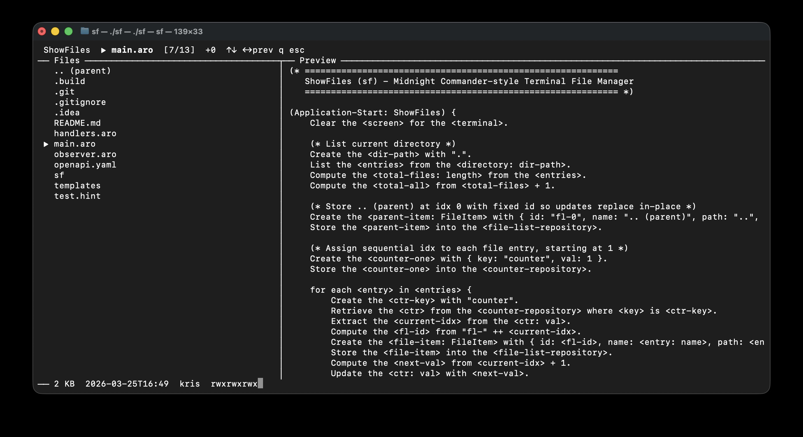
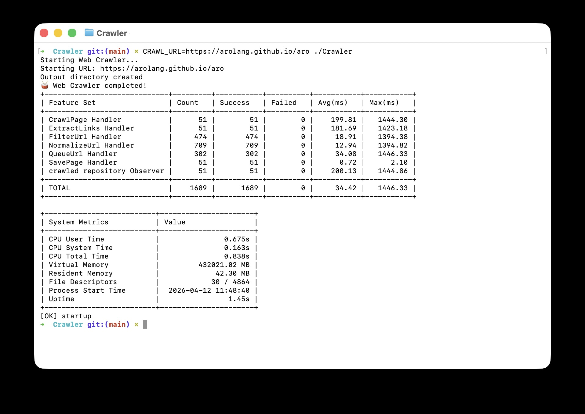
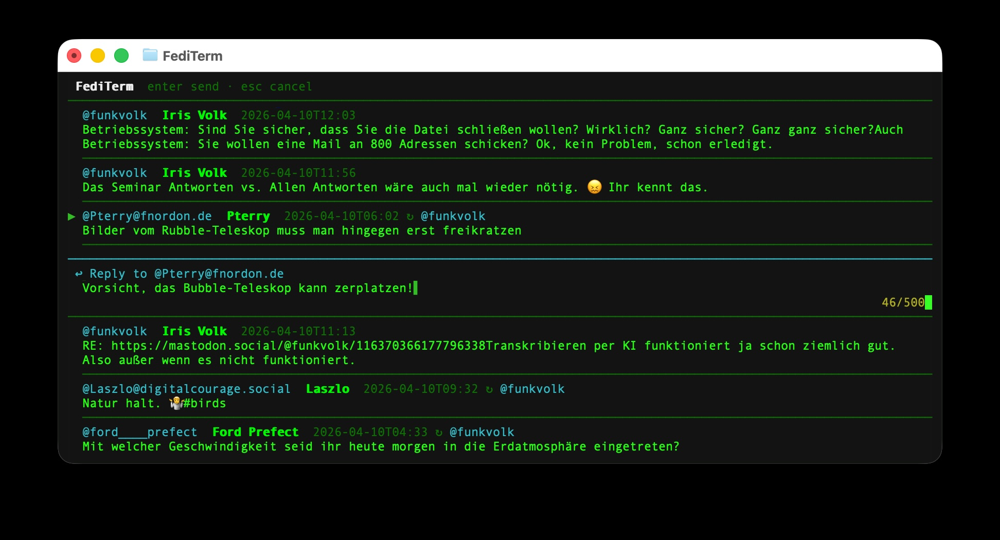

ShowFiles
A Midnight Commander-style terminal file manager with dual-panel layout, keyboard navigation, and streaming file previews. Compiled to a native binary with aro build.

Web Crawler
A web crawler that extracts content as Markdown. Fully event-driven with repository-based URL deduplication, parallel link processing, and typed event extraction via OpenAPI schemas. ~200 lines of ARO.
View on GitHub
FediTerm
A Mastodon client for the terminal. Browse your home timeline, stream new posts in real time via SSE, compose toots, and reply inline. Zero plugins or external dependencies.
View on GitHub